Reinforcement learning (RL) has dramatically improved the capabilities of large language models (LLMs), but it has also led to a phenomenon known as “jagged intelligence”: frontier models can solve complex math and coding problems while still struggling in domains such as art and literature.
A key reason for this disparity lies in the reward signals. In verifiable domains, mathematical solutions can be checked using theorem provers, and code can be evaluated in sandboxed environments. In contrast, creative tasks involve subjective qualities such as aesthetics, which lack clear ground-truth answers and are inherently difficult to evaluate. While standard LLM-as-a-Judge approaches can be used here, they often suffer from coarse-grained scoring.
In this blog, we explore how LLM-as-a-Verifier, a verification scaling framework, can improve the effectiveness of RL in non-verifiable domains, using painting as a case study. We validate this in the strictest setting, self-verification, using Inkling-Small as both generator and verifier. Specifically, we demonstrate that compared to standard LLM-as-a-Judge:
- Verifiers provide more effective reward signals for RL. By scaling verification along 3 dimensions—score granularity, repeated evaluation, and criteria decomposition—LLM-as-a-Verifier significantly improves the sample efficiency of RL for painting.
- Verifiers better align with human preferences. LLM-as-a-Verifier produces evaluation scores that correlate more strongly with human judgments of the aesthetic quality of paintings.
- Verifier provides better signals for test-time scaling. By evaluating and selecting among multiple generated paintings, LLM-as-a-Verifier provides effective signals for test-time selection, significantly improving the quality of the final outputs.
Painting Quality over RL training
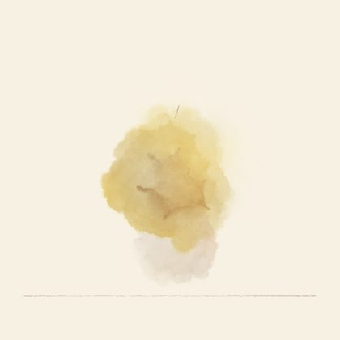
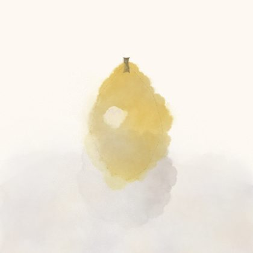
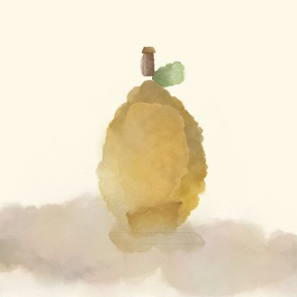
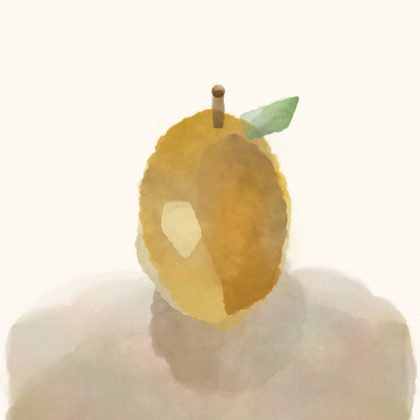
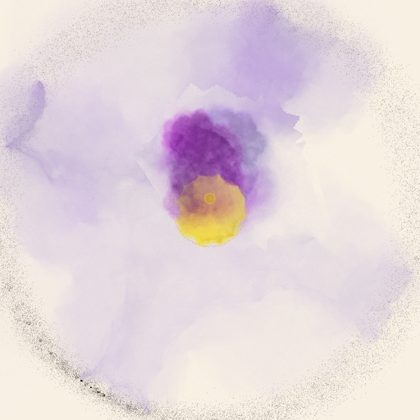
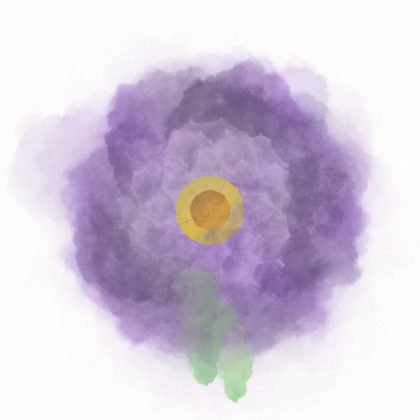
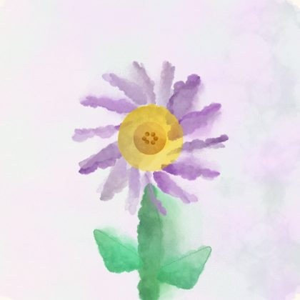
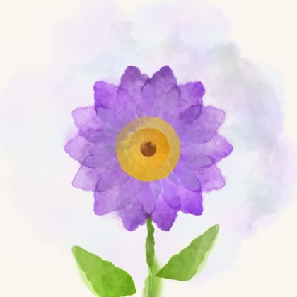
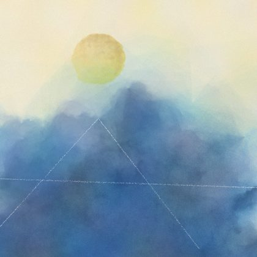
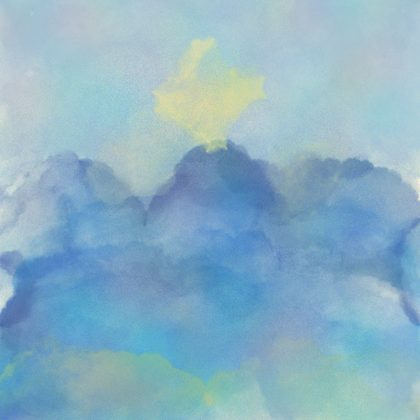
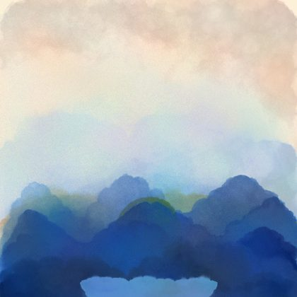
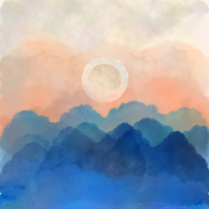
Limitations of LLM-as-a-Judge
A common approach to RL in non-verifiable domains is to use an LLM-as-a-Judge to provide reward signals. However, standard LLM judges often suffer from coarse-grained scoring, making it difficult to distinguish between outputs of similar quality. For example, when evaluating two paintings, an LLM judge may assign both a score of 5, resulting in a tie despite meaningful differences in their aesthetic quality.
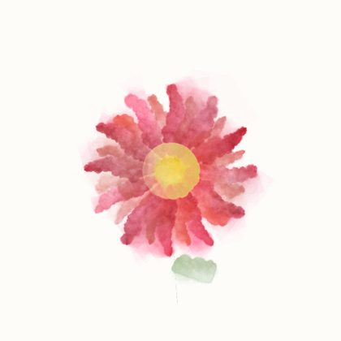
Judge score 5 Judge score 5
Judge score 5We also observe that this tie rate increases as RL training progresses, as the model produces increasingly competitive outputs that become harder to distinguish using discrete scores. The tie rate rises from 27% over the first 50 steps to about 40% by step 250.
How does LLM-as-a-Verifier work?
Given a painting prompt \(x\), a model \(p_\theta\), a criterion \(c\), and two candidate paintings \(\tau_i\) and \(\tau_j\) rendered from the policy's sketches, we construct scoring prompts and obtain their conditional distributions \(p_{\theta}(v \mid x,c,\tau_i)\) and \(p_{\theta}(v \mid x, c, \tau_j)\) by extracting the logprobs from <score_A> and <score_B> tags using the following prompt:
You are an expert watercolor reviewer. You will see a painting prompt and two paintings. Evaluation Criterion: {criterion} Prompt: {painting prompt} Painting A: {rendered image A} Painting B: {rendered image B} Carefully analyze each painting, then provide your final scores: <score_A> SCORE_1_TO_20 </score_A> <score_B> SCORE_1_TO_20 </score_B> Rating Rules: Rate each painting on a 1–20 scale for the criterion (1 = poor, 10 = acceptable, 20 = excellent)
Rather than collapsing each distribution to a single discrete score, we approximate the reward of a painting as:
where \(C\) is the number of evaluation criteria, \(K\) is the number of repeated verifications, \(G\) is the number of score tokens (granularity level), \(p_{\theta}(v_g \mid x, c, \tau)\) is the probability assigned by model \(\theta\) to score token \(v_g\), and \(\phi(v_g)\) maps each score token to a scalar value. See llm-as-a-verifier.com for details.
RL Training Pipeline
Given a text prompt (e.g., “a pear in watercolor”), Inkling-Small generates a JavaScript sketch using the p5.brush library. The sketch is executed in a sandboxed Puppeteer environment to produce a rendered PNG image. The resulting painting is then evaluated by the same model, Inkling-Small, through LLM-as-a-Verifier, which assigns fine-grained scores to assess its visual quality and alignment with the input prompt. These scores are normalized within each group and used to optimize the model via GRPO.
- Prompt
“a pear in watercolor”text prompt
- Inkling-Small
writes p5.brush JS
brush.pick("pen")brush.fill(ochre)brush.bleed(0.2)brush.polygon(…) - Render Puppeteer → PNG
- LLM-as-a-Verifier
fine-grained scores0.610.74
- GRPO
normalize → update
As a baseline, we replace the verifier with the standard LLM-as-a-Judge, which scores each painting separately on a discrete scale. Everything else in the pipeline stays the same. The fine-grained verifier score improves sample efficiency by ≈1.5× on painting.
Results
To quantify the sample efficiency gains from LLM-as-a-Verifier, we compare the number of RL training steps required to reach different target held-out scores. Across all three thresholds, LLM-as-a-Verifier consistently outperforms the standard LLM-as-a-Judge, reaching the same painting quality in fewer training steps. In particular, the verifier achieves a score of 0.65 in 200 steps, compared to 330 steps for the judge, representing a 1.65× improvement in sample efficiency. These results demonstrate that fine-grained verification provides more effective reward signals, enabling faster and more efficient RL training in creative domains.
| Target score | LLM-as-a-Judge | LLM-as-a-Verifier | Steps saved | Speedup |
|---|---|---|---|---|
| 0.60 | 180 | 140 | 40 | 1.29× |
| 0.65 | 330 | 200 | 130 | 1.65× |
| 0.68 | 400 | 260 | 140 | 1.54× |
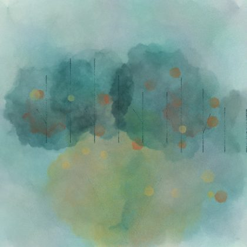
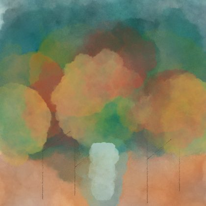
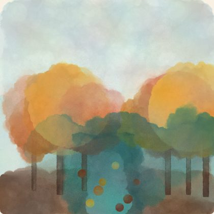
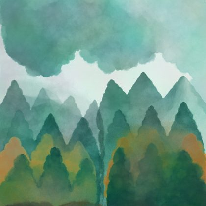
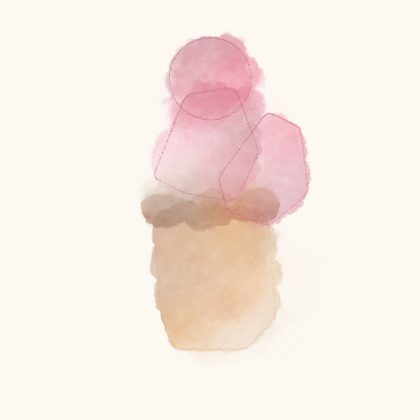
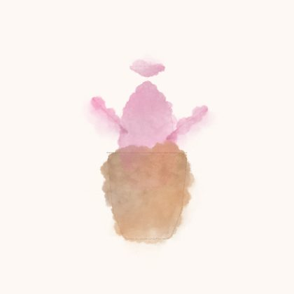
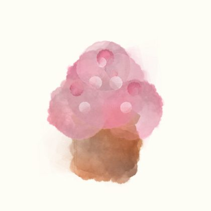
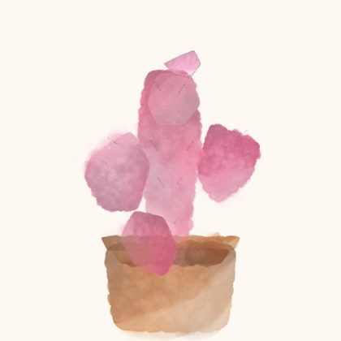
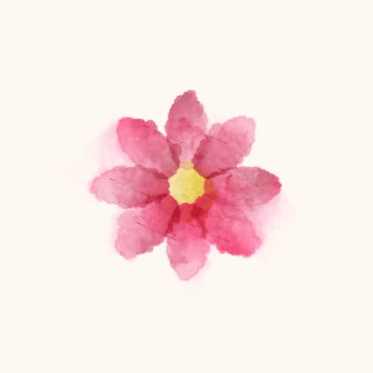
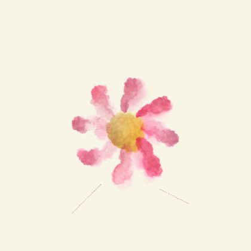

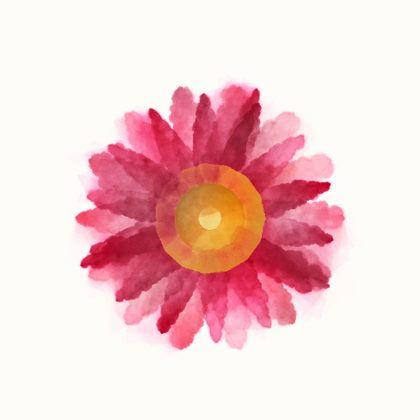
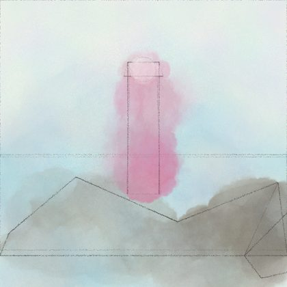
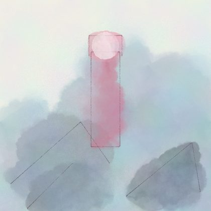
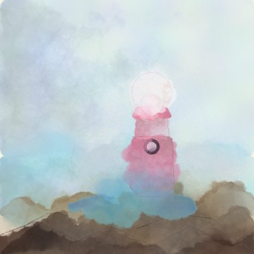
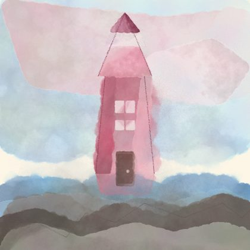
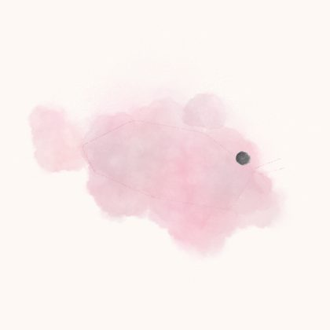
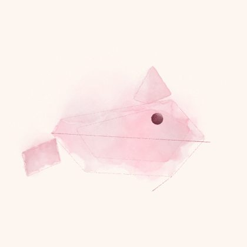
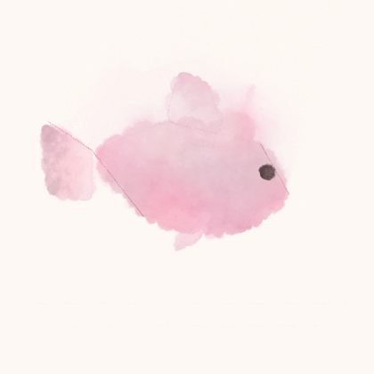
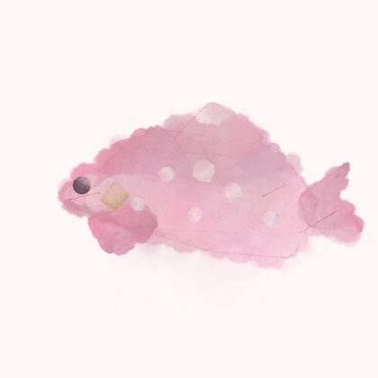
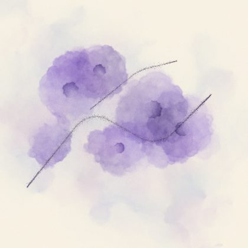
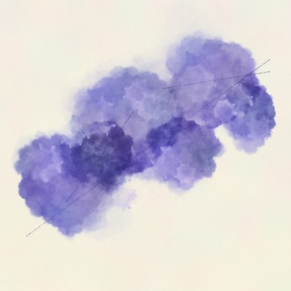
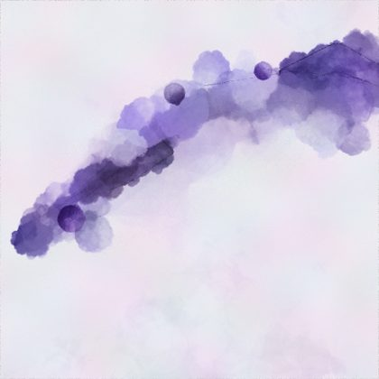
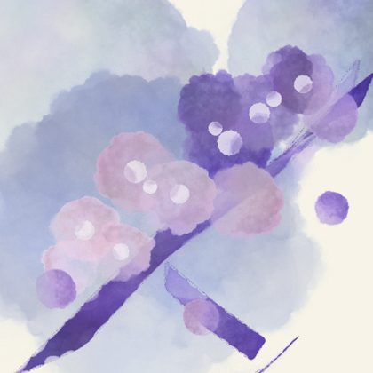
Conclusion
In this work, we demonstrate that scaling verification can make reinforcement learning more effective in creative, non-verifiable domains, using watercolor painting as a case study. Even in the challenging setting of self-verification, where Inkling-Small serves as both the generator and verifier, LLM-as-a-Verifier provides more informative reward signals than conventional LLM-as-a-Judge approaches.
By scaling score granularity, repeated evaluation, and criteria decomposition, LLM-as-a-Verifier reduces scoring ties, improves alignment with human preferences, and achieves approximately 1.5× better sample efficiency during RL training.
More broadly, our results suggest that the effectiveness of RL depends not only on the capabilities of the policy, but also on the quality of its reward signals. While much of the recent progress in RL has focused on domains with objectively verifiable outcomes, scaling verification offers a promising path toward extending these gains to subjective and creative tasks, where reliable reward signals are difficult to obtain.
Citation
Please cite this work as:
Kwok, Jacky, Surya Narreddi, Neal Wu and Simon Guo, “Scaling RL for Creative Tasks with Self-Verification”, Thinking Machines Lab: Connectionism, Nov 2026.
BibTeX: